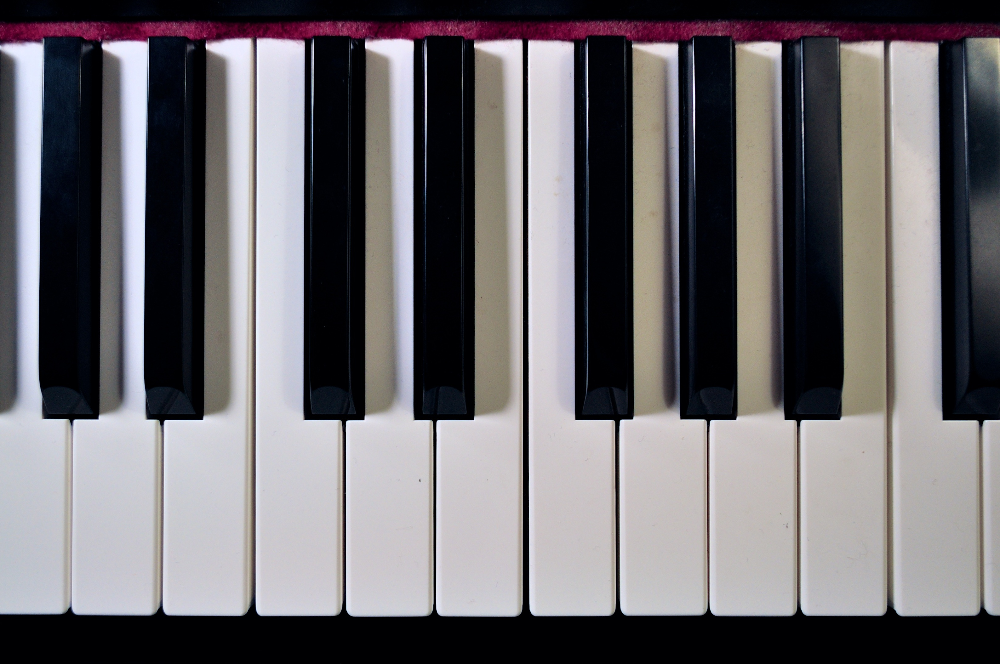

Ein Klavier hat 88 Tasten insgesamt. Es hat 36 schwarze und 52 weiße Tasten. Man kann 12 Töne in verschiedenen Höhen spielen. Diese Töne heißen: C, D, E, F, G, A, H, C
Das Klavier hat 3 Pedale. Das rechte Pedal heißt Dämpferpedal, das linke Pianopedal und das Mittlere Moderatorpedal. Mehr Informationen findet ihr hier.